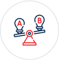

<style>
    .challenge-solution-container {
    position: relative;
    padding: 2rem 0;
  }
  .vertical-line {
    position: absolute;
    top: 0;
    bottom: 0;
    left: 50%;
    width: 2px;
    background: #FF3333;
    margin-left: -1.5px;
    z-index: 1;
  }


  .custom-card {
      border: 2px solid #e6e9f1; 
      border-radius: 12px; 
      background-color: #f8f9fb; 
      padding: 20px; 
      box-shadow: 0 4px 6px rgba(0, 0, 0, 0.1);
      width: 100%; 
  }

  .icon-wrapper {
      min-width: 80px;
      min-height: 80px;
      background-color: white;
      border-radius: 50%;
      display: flex;
      align-items: center;
      justify-content: center;
      overflow: hidden;
  }

  .icon-wrapper img {
      max-width: 100%;
      height: auto;
  }

  .custom-image-size {
  width: 70%; /* Ajustez la largeur maximale (en pourcentage ou pixels) */
  height: auto; /* Maintient le ratio d'aspect */
  }
  .second-card {
      position: relative;
  }

  @media (min-width: 992px) {
      .second-card {
          left: -64px;
      }
  }

  @media (max-width: 991px) {
      .second-card {
          left: 0;
      }
  }

  .color-red, i {
      color: #FF3333;
  }

  .bg-custom--primary {
      background-color: #25335b;
  }

  .bg-custom--primary p,
  .bg-custom--primary ul,
  .bg-custom--primary h1,
  .bg-custom--primary h2 {
      color: white;
  }

  .rectangle-red {
      background-color: #FF3333;
      border-radius: 8px;
      padding: 6px;
  }

  .hadding h1 {
      color: white;
      font-size: 29px !important;
      line-height: 48px;
      padding-bottom: 18px;
  }

  .highlighted {
      background-color: #ff4136;
      color: #fff;
      padding: 0.2rem 0.5rem;
      border-radius: 0.25rem;
  }

  .vertical-divider {
      border-left: 1px solid #d1d1d1;
      height: 100%;
  }

  .icon-red {
      color: #ff4136;
      font-size: 1.5rem;
      margin-right: 1rem; 
  }

  .section-title {
      font-size: 1.75rem;
      font-weight: 700;
      margin-bottom: 2rem;
  }

  .flex-content {
      display: flex;
      align-items: flex-start; 
      margin-bottom: 1rem;
  }

  .section-content h5 {
      font-size: 1.25rem;
      font-weight: 600;
      margin-bottom: 1rem;
  }

  .section-content ul {
      list-style: none;
      padding: 0;
  }

  .header {
      background: url('../../assets/img/bg/bg_about.webp') no-repeat center center/cover;
      min-height: 300px;
      position: relative;
      display: flex;
      align-items: center;
      justify-content: center;
  }

  .header-overlay {
      height: 100%;
      width: 100%;
      display: flex;
      align-items: center;
      color: white;
  }

  /* Media queries pour adapter sur plus petits écrans */
  @media (max-width: 767px) {
      .hadding h1 {
          font-size: 24px;
          line-height: 36px;
      }

      .custom-card {
          padding: 15px;
      }

      .icon-wrapper {
          min-width: 60px;
          min-height: 60px;
      }

      .works-items h2 {
          font-size: 1.2rem;
      }

      .section-title {
          font-size: 1.5rem;
      }
  }

  @media (max-width: 575px) {
      .hadding h1 {
          font-size: 20px;
          line-height: 32px;
      }
  }

  .sticky-image {
  position: relative;
  transition: all 0.3s ease-in-out; 
}

.sticky {
  position: fixed;
  top: 20px; 
  z-index: 10; 
}


</style>
<header class="header">
    <div class="header-overlay">
        <div class="container">
            <h1>Grande Entreprise</h1>
            <p class="text-white">Accueil &gt; Grande Entreprise</p>
        </div>
    </div>
</header>

<!-- Service single start -->
<section class="service-single pt-120 pb-130" style="padding: 64px;">
  <div class="container">
      <div class="row">
          <!-- Sidebar -->
           <div class="col-lg-4">
            <app-sidebar></app-sidebar>
           </div>
        
          <!-- Main Content -->
          <div class="col-lg-8">
              <div class="single-content">
                  <h2 class="display-5 fw-bold">
                    Anticipez, gérez et innovez pour maximiser 
                    <span class="bg-custom--primary text-white px-2 rounded"> votre rentabilité </span>
                  </h2>
                  <div>
                    <p>Les grandes entreprises évoluent dans un environnement complexe où une gestion rigoureuse des finances est essentielle pour garantir leur compétitivité. Entre le pilotage stratégique, la gestion des flux de trésorerie, et l’optimisation des ressources, il est crucial de disposer d’outils adaptés et d’un accompagnement expert. </p>
                    <p>Chez MFINANCES, nous proposons des solutions sur mesure, intégrant des budgets prévisionnels, des situations mensuelles détaillées, et un système de cash collecting optimisé</p>
                    <br>
                </div>
                <div class="button-container" >
                  <div class="home2-btn mb-4">
                    <button (click)="scrollToSection('targetSection')"  class="btn-red">Découvrez ce que vous gagnerez avec nous <i class="fa-solid fa-arrow-right"></i></button>
                </div>
                </div>
                  <div class="single-img mt-35 mb-4 custom-single">
                      
                  </div>
              </div>
             
            <div class="defis row align-items-center mt-10">
              <!-- <h1>Transition numérique : Digitalisez vos processus pour un service client fluide</h1> -->
              <!-- Image -->
              <div class="col-md-4 custom-img">
                  
              </div>
              <!-- Content -->
              <div class="col-md-8 mt-30">
                  <p>Grâce à l’intervention d’un contrôleur de gestion et d’un directeur financier (DAF) à temps partiel, vous bénéficiez d’un pilotage financier précis et accessible, avec des bénéfices immédiats :</p>
                  
                  <ul class="list-unstyled pl-25">
                      <li>
                          <i class="fa fa-star" style="font-size: 14px; color: #FF3333; margin-right: 6px;"></i>
                          Réduction des coûts opérationnels
                      </li>
                      <li>
                          <i class="fa fa-star" style="font-size: 14px; color: #FF3333; margin-right: 6px;"></i>
                          Meilleure allocation des ressources
                      </li>
                      <li>
                        <i class="fa fa-star" style="font-size: 14px; color: #FF3333; margin-right: 6px;"></i>
                        Capacité accrue à investir dans l’innovation
                    </li>
                  </ul>
              </div>
          </div>
          
          </div>
          
          <!-- End Main Content -->
      </div>
  </div>
</section>
<section class="bg-custom--primary">
  <div class="works sec-padding">
    <div class="container">
      <div class="row align-items-start">
        <!-- Contenu principal -->
        <div class="col-md-12 col-lg-6">
          <div class="how-in-work-sec">
            <div class="hadding hadding-p" data-aos="fade-right" data-aos-duration="800">
              <h1>Besoins spécifiques des grandes entreprises : <br>
                <span class="rectangle-red">Une gestion sur mesure pour des résultats concrets</span>
              </h1>
            </div>
            <div class="space20"></div>
            <div class="works-items">
              <!-- Service 1 -->
              <div class="work-item d-flex align-items-baseline" data-aos="fade-right" data-aos-duration="1200">
                <div class="me-3">
                  <div class="work-icon">
                    
                  </div>
                </div>
                <div class="hadding hadding-p">
                  <h2>Budgets prévisionnels dynamiques :</h2>
                  <ul>
                    <li>Le budget prévisionnel projette vos recettes et dépenses pour une planification stratégique.</li>
                    <li>Anticipez vos besoins financiers et réévaluez vos priorités stratégiques.</li>
                  </ul>
                  <p><b>Résultat :</b> Une prise de décision éclairée et une réduction des imprévus financiers.</p>
                </div>
              </div>
              <!-- Service 2 -->
              <div class="work-item d-flex align-items-baseline" data-aos="fade-right" data-aos-duration="1400">
                <div class="me-3">
                  <div class="work-icon">
                    
                  </div>
                </div>
                <div class="hadding hadding-p">
                  <h2>Gestion proactive de la trésorerie :</h2>
                  <ul>
                    <li>Identifiez à l’avance les périodes critiques pour éviter les découverts coûteux.</li>
                    <li>Optimisez vos flux financiers et réduisez les délais de paiement clients.</li>
                  </ul>
                  <p><b>Résultat :</b> Une meilleure capacité d’investissement et une visibilité renforcée.</p>
                </div>
              </div>
              <!-- Service 3 -->
              <div class="work-item d-flex align-items-baseline" data-aos="fade-right" data-aos-duration="1600">
                <div class="me-3">
                  <div class="work-icon">
                    
                  </div>
                </div>
                <div class="hadding hadding-p">
                  <h2>Contrôle de gestion avancé :</h2>
                  <ul>
                    <li>Mise en place de tableaux de bord personnalisés pour suivre vos indicateurs clés.</li>
                    <li>Analyse proactive des écarts entre le prévisionnel et le réalisé pour ajustements rapides.</li>
                  </ul>
                  <p><b>Résultat :</b> Une allocation optimisée des ressources et une performance accrue.</p>
                </div>
              </div>
              <!-- Service 4 -->
              <div class="work-item d-flex align-items-baseline" data-aos="fade-right" data-aos-duration="1800">
                <div class="me-3">
                  <div class="work-icon">
                    <i class="fa-solid fa-clock"></i>
                  </div>
                </div>
                <div class="hadding hadding-p">
                  <h2>Flexibilité avec un DAF à temps partiel :</h2>
                  <ul>
                    <li>Élaboration de business plans et supervision des projets complexes.</li>
                    <li>Gestion de la trésorerie et optimisation des fonctions financières et juridiques.</li>
                  </ul>
                  <p><b>Résultat :</b> Une expertise de haut niveau accessible à coût réduit.</p>
                </div>
              </div>
              <!-- Service 5 -->
              <div class="work-item d-flex align-items-baseline" data-aos="fade-right" data-aos-duration="2000">
                <div class="me-3">
                  <div class="work-icon">
                    <i class="fa fa-cogs" aria-hidden="true"></i>
                  </div>
                </div>
                <div class="hadding hadding-p">
                  <h2>Digitalisation et automatisation des processus :</h2>
                  <ul>
                    <li>Intégrez des outils ERP et CRM pour centraliser vos données financières et commerciales.</li>
                    <li>Automatisez vos reportings pour une réduction des erreurs et un suivi en temps réel.</li>
                  </ul>
                  <p><b>Résultat :</b> Une productivité accrue et des analyses plus fiables.</p>
                </div>
              </div>
            </div>
          </div>
        </div>

        <!-- Image sticky -->
        <div class="col-md-12 col-lg-6">
          <div class="works-img">
            
          </div>
        </div>
      </div>
    </div>
  </div>
</section>


<section class="py-5">
    <div class="container">
      <div class="row align-items-center">
        <!-- Colonne gauche : Titre, description et bouton -->
        <div class="col-lg-5">
          <!-- <p class="text-uppercase text-secondary fw-semibold mb-2 ">
            Our Working Process
          </p> -->
          <h2 class="fw-bold mb-3">
            Pratiques complémentaires pour une gestion optimisée
          </h2>
          <p class="mb-4">
           Les pratiques pour une gestion efficace
          </p>
        </div>
        
        <!-- Colonne droite : Les étapes -->
        <div class="col-lg-7 mt-5 mt-lg-0">
          
          <!-- Étape 1 -->
          <div class="mb-4 position-relative p-4 bg-white rounded shadow">
            <span class="text-uppercase text-danger fw-bold small d-block mb-1">
                Etape
            </span>
            <h5 class="fw-semibold mb-2">Situations mensuelles intermédiaires</h5>
            <p class="mb-2">
                Produisez des rapports réguliers pour analyser les écarts et ajuster les stratégies en cours.
                Identifiez rapidement les anomalies pour garantir un pilotage précis.
            </p>
            <p class="mb-0 fw-bold">
                Avantage client : Une réactivité accrue face aux imprévus,<br> évitant des pertes opérationnelles.
            </p>
            <!-- Numéro géant en fond -->
            <span class="position-absolute" 
                  style="right: 1rem; bottom: -0.5rem; font-size: 72px; opacity: 0.1;">
              01
            </span>
          </div>
          
          <!-- Étape 2 -->
          <div class="mb-4 position-relative p-4 bg-white rounded shadow">
            <span class="text-uppercase text-danger  fw-bold small d-block mb-1">
                Etape
            </span>
            <h5 class="fw-semibold mb-2">Analyse approfondie des indicateurs financiers</h5>
            <p class="mb-2">
                Ratio de trésorerie, délai moyen de paiement clients (DSO), marge brute et rentabilité par projet.
            </p>
            <p class="mb-0 fw-bold">
                Avantage client : Une vision claire pour prioriser les actions<br>  et allouer les budgets efficacement.
            </p>
            <span class="position-absolute" 
                  style="right: 1rem; bottom: -0.5rem; font-size: 72px; opacity: 0.1;">
              02
            </span>
          </div>
          
          <!-- Étape 3 -->
          <div class="mb-4 position-relative p-4 bg-white rounded shadow">
            <span class="text-uppercase text-danger  fw-bold small d-block mb-1">
              Etape
            </span>
            <h5 class="fw-semibold mb-2">Automatisation des tâches et outils de suivi</h5>
            <p class="mb-2">
                Implémentez des logiciels adaptés pour réduire le temps passé sur les tâches administratives.
            </p>
            <p class="mb-0 fw-bold">
                Avantage client : Moins de ressources immobilisées sur des tâches répétitives,<br> et davantage consacrées à l’innovation et à la stratégie.
            </p>
            <span class="position-absolute" 
                  style="right: 1rem; bottom: -0.5rem; font-size: 72px; opacity: 0.1;">
              03
            </span>
          </div>
    
        </div> 
        
      </div> <!-- Fin row -->
    </div> <!-- Fin container -->
  </section>
  
<section class="bg-custom--primary mt-5">
    <div class="container py-5">
        <h1 class="section-title">Exemples Concrets : Résultats obtenus avec MFINANCES</h1>

        <div class="row g-4">
            <!-- Cas Entreprise Industrielle -->
            <div class="col-md-6">
                <div class="case-card">
                    <h2 class="h4 text-danger">Entreprise industrielle multi-sites</h2>
                    <p class="problem text-dark"><strong>Problème :</strong> Manque de visibilité sur les flux financiers et tensions fréquentes sur la trésorerie.</p>
                    <p class="solution text-dark"><strong>Solution :</strong></p>
                    <ul class="text-dark">
                        <li>Situations mensuelles intermédiaires.</li>
                        <li>Tableaux de trésorerie prévisionnels actualisés chaque semaine.</li>
                        <li>Système de cash collecting centralisé.</li>
                    </ul>
                    <p class="result text-dark"><strong>Résultat :</strong></p>
                    <ul class="text-dark">
                        <li>Réduction des retards de paiement de 40 %.</li>
                        <li>Projections financières fiables sur 12 mois, permettant une planification optimisée.</li>
                    </ul>
                </div>
            </div>

            <!-- Cas Groupe Technologique -->
            <div class="col-md-6">
                <div class="case-card">
                    <h2 class="h4 text-danger">Groupe technologique en pleine croissance</h2>
                    <p class="problem text-dark"><strong>Problème :</strong> Retards dans les encaissements clients, entraînant des difficultés à financer l’innovation.</p>
                    <p class="solution text-dark"><strong>Solution :</strong></p>
                    <ul class="text-dark">
                        <li>Mise en place de budgets prévisionnels dynamiques et tableaux de trésorerie.</li>
                        <li>Formation des équipes au cash collecting.</li>
                    </ul>
                    <p class="result text-dark"><strong>Résultat :</strong></p>
                    <ul class="text-dark">
                        <li>Diminution des délais de paiement clients de 20 jours.</li>
                        <li>Augmentation des liquidités, permettant de financer un projet stratégique en R&D.</li>
                    </ul>
                </div>
            </div>
        </div>
    </div>
</section>

<!-- <app-timeline-independant></app-timeline-independant> -->
<section class="py-5" id="targetSection">
    <div class="container">
        <div class="row align-items-center">
            <!-- Colonne gauche (texte) -->
            <div class="col-8 col-md-6 mb-4" data-aos="fade-right">
                <h2 class="display-5 fw-bold" style="font-size: 40px !important;">
                    Pourquoi choisir <br>
                    <span class="bg-danger text-white px-2 rounded">MFINANCES</span> pour vous accompagner ?
                </h2>
            </div>
      
            <!-- Colonne droite (cartes) -->
            <div class="col-12 col-md-6 d-flex flex-column gap-4">
                <!-- Carte 1 -->
                <div class="custom-card p-4 d-flex align-items-start" data-aos="fade-up" data-aos-delay="200">
                    <div class="icon-wrapper me-3 d-flex justify-content-center align-items-center">
                        
                    </div>
                    <div>
                        <h5 class="fw-semibold mb-2">Un accompagnement stratégique et personnalisé </h5>
                        <p class="mb-0 text-muted">Nos contrôleurs de gestion et DAF apportent des solutions spécifiques à vos défis. </p>
                    </div>
                </div>
      
                <!-- Carte 2 -->
                <div class="custom-card p-4 d-flex align-items-start second-card" data-aos="fade-up" data-aos-delay="400">
                    <div class="icon-wrapper me-3 d-flex justify-content-center align-items-center">
                        
                    </div>
                    <div>
                        <h5 class="fw-semibold mb-2">Des outils modernes et flexibles</h5>
                        <p class="mb-0 text-muted">Intégration de tableaux de bord, ERP, et CRM pour un pilotage précis. </p>
                    </div>
                </div>
      
                <!-- Carte 3 -->
                <div class="custom-card p-4 d-flex align-items-start" data-aos="fade-up" data-aos-delay="600">
                    <div class="icon-wrapper me-3 d-flex justify-content-center align-items-center">
                        
                    </div>
                    <div>
                        <h5 class="fw-semibold mb-2">Des résultats concrets et mesurables</h5>
                        <p class="mb-0 text-muted">Réduction des coûts opérationnels, amélioration des liquidités, et croissance durable. </p>
                    </div>
                </div>
            </div>
        </div>
    </div>
</section>

<section class="container my-5">
  <div class="rounded-4 bg-custom--primary text-white px-4">
    <div class="row align-items-center">
      <!-- Image visible uniquement à partir du md (desktop) -->
      <div 
        class="col-md-6 d-none d-md-flex justify-content-center align-items-end" 
        data-aos="fade-left" 
        data-aos-delay="200"
      >
        
      </div>

      <!-- Texte et bouton, centrés sur mobile/tablette -->
      <div 
        class="col-12 col-md-6 d-flex flex-column justify-content-center align-items-center align-items-md-start text-center text-md-start mt-4 mt-md-0"
        data-aos="fade-right"
        data-aos-delay="400"
      >
        <h2 class="fw-bold mb-4">
            Transformez vos défis <br>
          <span class="bg-danger text-white px-2 py-1 rounded-2">en opportunités</span>.
        </h2>
        <p class="mb-4" data-aos="fade-up" data-aos-delay="600">
            Contactez-nous dès aujourd’hui pour un diagnostic gratuit et découvrez comment MFINANCES peut optimiser vos processus financiers, améliorer votre trésorerie, et accélérer votre croissance.  
        </p>
        <a 
          href="#" 
          class="btn btn-danger btn-sm px-3 py-2" 
          data-aos="zoom-in" 
          data-aos-delay="800"
        >
          Contactez-nous <i class="fas fa-arrow-right"></i>
        </a>
      </div>
    </div>
  </div>
</section>
<app-recommandation-profil></app-recommandation-profil>